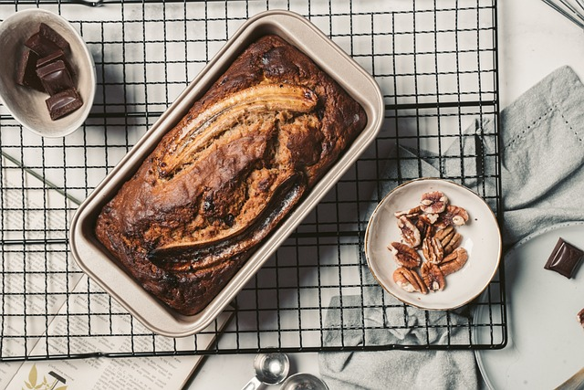

Ingredients
- 1 large very ripe banana
- 1 egg with enough milk to make 1 cup (I used whole milk because that's what my girls drink)
- 1 stick of butter, softened
- 1 tsp. vanilla
- 1 1/2 cups flour
- 1/2 cup sugar
- 1/2 cup apple sauce
- 1 tsp. baking soda
- Walnuts (optional)
- Dash of cinnamon (optional)
Instructions
- Preheat your oven to 350 degreed F
- Dump all of the ingredients (except for the nuts and chocolate chips) into your mixer bowl; no need to combine. I just broke the banana up into a couple of chunks.
- Mix on low to medium-low until most of the chunks are gone.
- Grease a baking pan. (Grease it really well...the bottom of my bread stuck because I didn't grease it well enough!)
- If you're adding chocolate chips, mix them into the batter and pour into the bread pan. Top with sprinkles of walnuts.
- Bake at 350 for 55 minutes. Use a toothpick to determine if the bread is cooked all the way through.
- Let cool for 5 to 10 minutes and then enjoy!
It's a very dense, moist bread. Very Tasty!